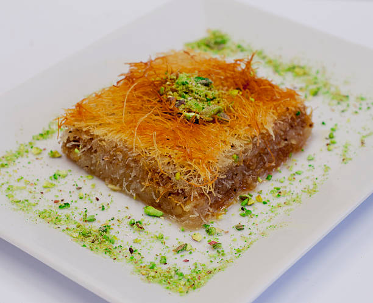

Yüksek kalorisi yüzünden bir tereddüt yaşatsa da tatlı sevenleri durduramayan cevizli kadayıf tatlısı.İşte düşündüğümüzde bile ağzımızı sulandıran bu tatlının tarifi..

Cevizli tel kadayıf
Malzemeler
- Yarım kg kadayıf
- 4 kaşık tereyağı
- 1 su brdağı ceviz
Şerbet için malzemeler
- 3 bardak şeker
- 3 bardak su
- Birkaç damla limon suyu
Nasıl yapılır?
- Şerbetimizi hazırlamak için tabiki ilk olarak 3 su bardağı suyumuzu bir sos tenceresine alıyoruz.
- Ardından 3 su bardağı şekerimizi ilave ediyoruz. Biraz karıştıralım şeker dibe yapışmasın ve bırakalım şeker ve su kaynasın.
- Suyumuz kaynamaya başladıktan sonra bir dakika bırakalım kaynasın ve çeyrek limonun suyunu ilave edip şerbeti ılınmaya bırakalım.
- Yarım kg kadayıfın her tarafını eriteceğimiz 150gram tereyağını bulaştıracağız. Fakat tereyağı ocakta hafif hafif erittikten sonra bırakın önce kenarda ılınsın elimizi yakmak istemeyiz.V
- Şimdi tereyağımızı kadayıfların üzerine güzelce gezdirip hepsini ıslatalım. Hepsine tereyağının tamamen bulaştığına emin olduktan sonra kadayıfları göz kararı ikiye bölelim
- Kadayıfların yarısını avcumuzun içiyle bastıra bastıra tepsimizin tabanına iyice yerleştiriyoruz. Eğer burada kadayıfları iyi bastırmadan gevşek bırakırsanız tatlınız servis ederken darmadağın olur.
- Tabana yerleştirdiğimiz kadayıfın üzerine bir makine yardımıyla ince çektiğimiz cevizi seriyoruz.
- Ardından kalan 250gram kadayıfıda cevizleri serdikten sonra tekrar üzerlerine yayıyoruz ve yine elimizle sıkıştırıyoruz
- Şimdi 200c fırında 30-35 dakika altı üstü kızarana kadar pişiriyoruz.
- Kadayıf tatlımız fırından çıktıktan 5 dakika sonra ılınmış yani yaklaşık oda ısısındaki şerbetimizi tatlımızın üzerine eşit şekilde gezdirerek dağıtıyoruz ve yaklaşık olarak 2 saat sonra servis edebiliriz.
İŞTE PÜF NOKTALAR!!!
- En önemli püf noktası kadayıfın tabanını güzel sıkıştırmaktır. Aksi taktirde servis esnasında dilimleriniz dağılabilir.
AFİYET OLSUN